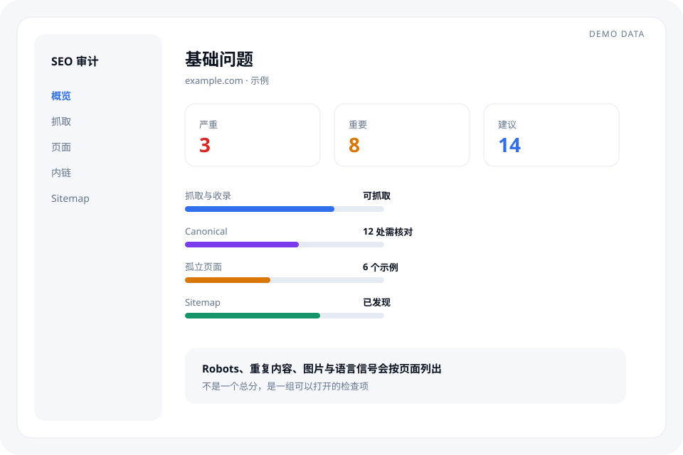
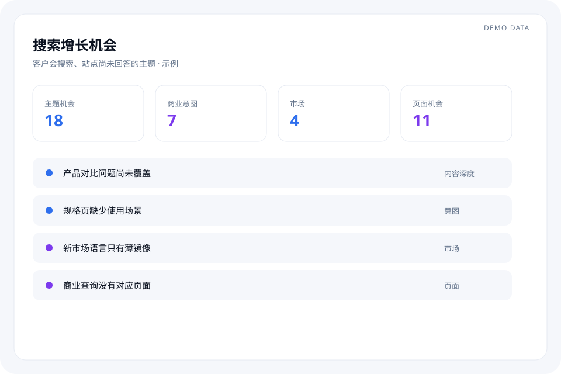
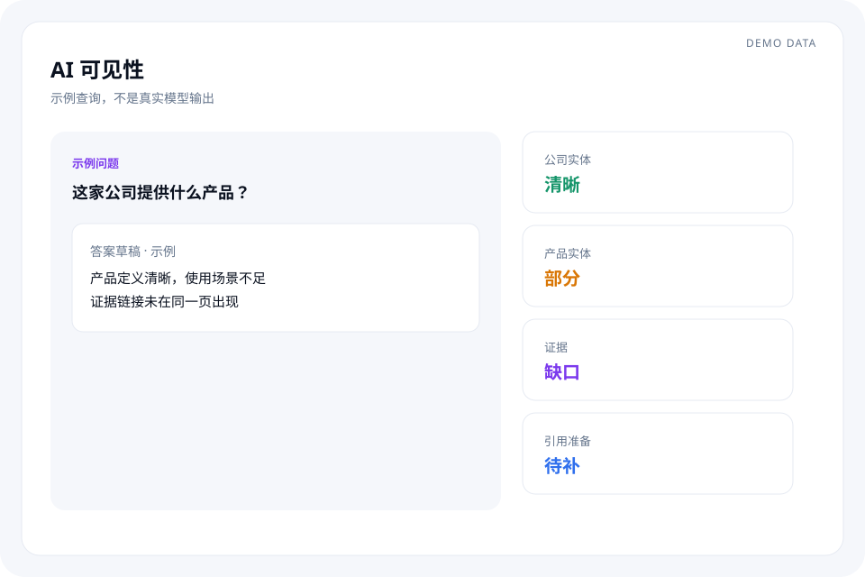
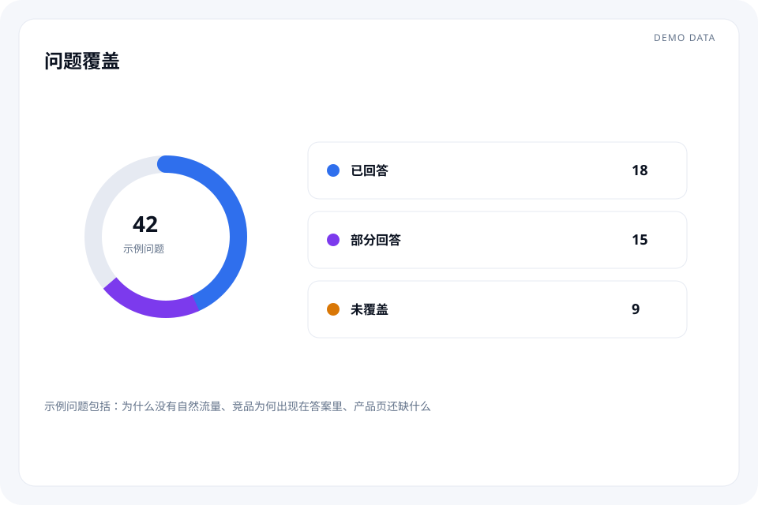
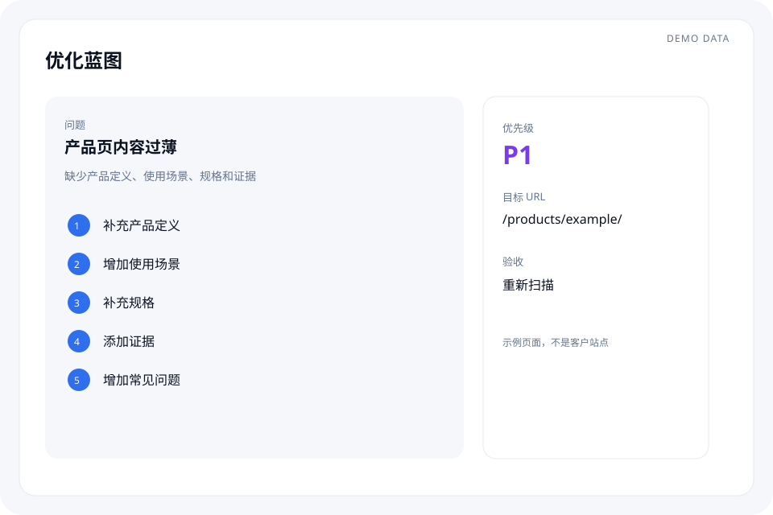
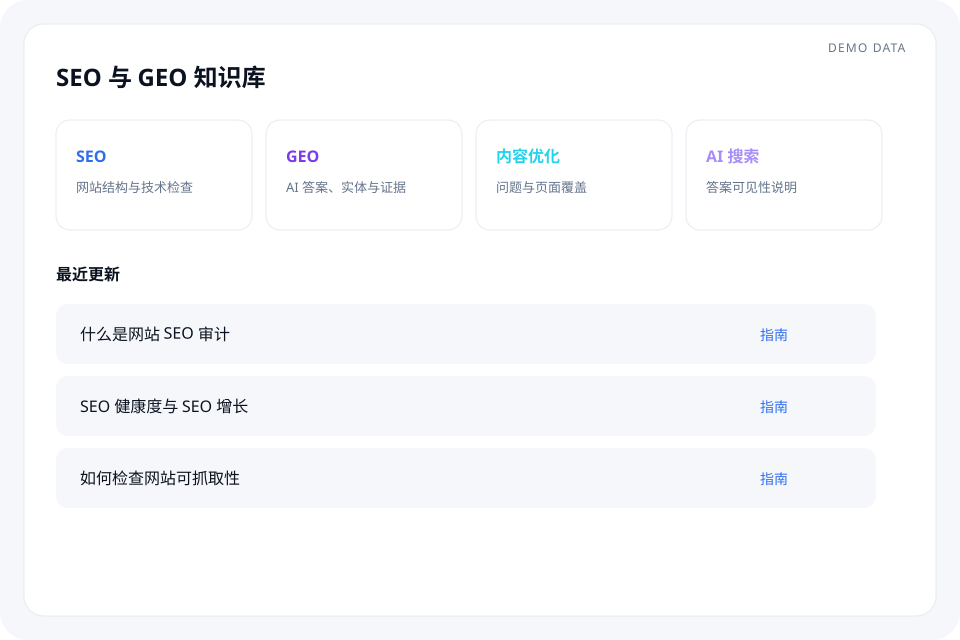

SEARCH & AI VISIBILITY
让客户在搜索和 AI 里找到你。
Google 搜索、ChatGPT、Gemini 等入口正在改变客户发现企业的方式。Mika 帮你检查网站哪里出了问题、还有哪些搜索机会没有覆盖，以及 AI 是否能够正确理解你的企业、产品和内容。
- 页面结构
- 搜索基础
- 内容覆盖
- 商业意图
- AI 答案
- 实体信息
- 证据
- 多语言
示例数据，仅用于演示
很多网站的问题，不是没有内容，而是没有被正确发现。
你的网站，可能正在错过本来可以获得的客户。
01
网站存在，但客户找不到。
页面可能无法被正确抓取、结构混乱、重要页面没有被充分连接，或者搜索需求覆盖不足。
02
客户问 ChatGPT，答案里却没有你。
AI 是否能够识别你的公司、产品、服务和专业信息，取决于网站提供的信息是否清晰、一致、可理解、可验证。
03
知道有问题，却不知道先改哪里。
Mika 将扫描结果整理成问题、机会和页面级优化动作，让你知道先处理什么。
一个平台，看清网站从“被找到”到“被理解”的全过程。
Mika 不只是检查技术问题，而是同时观察搜索、内容、商业意图和 AI 答案中的可见性。
Mika 会真正检查你的网站，而不是只给你一个分数。
不是发现问题就结束，而是把问题转化成下一步行动。
01
扫描查看页面、架构、内链、主题、问题、实体、证据、语言和图片。
02
诊断按严重、重要、建议归组。
03
优化蓝图写清问题在哪里、为什么重要、改什么、哪一页、优先级和如何验收。
04
执行由你的团队按蓝图修改网站。
05
复审重新扫描，观察哪些地方已经改善。
接上前面的四个问题
扫描之后，看到的就是这四件事。
不是另起一份技术清单。每一块都回到上面已经提出的问题：现在能不能被找到，AI 能不能理解你，下一步还缺什么。
SEO 健康度 · 现在
搜索现在能不能找到你。
接着「网站存在，但客户找不到」。先看抓取、页面和内链有没有挡住发现。
- 抓取与收录
- 重要页面是否连得上
- 这一页在说什么

SEO 增长 · 下一步
客户在搜的，网站还没回答。
接着「还有哪些真实搜索需求没有覆盖」。看主题、购买意图，以及还没写到的页面。
- 客户会搜的主题
- 页面能支撑的意图
- 还缺的页面

GEO 健康度 · 现在
AI 现在能不能说清你是谁。
接着「客户问 ChatGPT，答案里却没有你」。看公司、产品和证据是否清楚、一致。
- 公司与产品
- 直接回答
- 主张对应到证据

GEO 增长 · 下一步
还有哪些问题，AI 也答不上。
问题会标成已回答、部分回答或未覆盖。这是下一步要补的答案，不是另一个分数。
- 已回答
- 部分回答
- 未覆盖

这三件事，让上面的判断落在具体页面上。
问题
客户问的，对到哪一页。
每个问题要么已经有页面回答，要么标成还没覆盖。
实体与证据
你是谁、卖什么，要对得上。
公司、产品、规格、场景和证据需要是同一套事实。
多语言
多种语言，仍是同一套事实。
对照各语言页面上的名称、规格、应用和主张。
不要只告诉我“哪里错了”。
告诉你下一步应该怎么改：问题、原因、动作、页面和验收方式。
- 示例：产品页内容过薄，因为缺少定义、场景、规格和证据。
- 动作包括补定义、场景、规格、证据和常见问题。
- 优先级、目标 URL 和“重新扫描”写在同一张蓝图上。

SEO & GEO 知识库
不仅发现问题，还可以随时找到解决问题的方法。
把 SEO、GEO、网站优化和 AI 搜索相关的知识、文章和资料集中到一个工作空间。
SEO 知识库
网站结构与搜索增长
学习网站结构、技术 SEO、内容优化和搜索增长。
GEO 知识库
AI 搜索与证据
学习 AI 搜索、AI 答案、实体、证据和引用。
博客
持续更新
SEO、GEO、AI 搜索和网站增长的文章。

搜索正在从“给你链接”变成“直接给你答案”。
用户获取信息的方式正在变化。他们可能从传统搜索进入网站，也可能先通过 ChatGPT、Gemini、AI 搜索等工具获取答案。企业需要同时关注：网站能不能被搜索发现，能不能回答真实问题，AI 能不能正确理解企业信息，重要内容有没有清晰证据。Mika 把这些问题放在同一个可见性框架里。
搜索网站内容AI 理解答案客户
谁适合 Mika
企业老板
想知道网站为什么没有带来足够客户。
市场负责人
需要知道应该继续做什么内容。
SEO / 内容团队
需要更快发现技术问题和内容缺口。
外贸 / 国际业务团队
需要检查多语言网站和海外市场的搜索可见性。
常见问题
什么是 SEO 审计？
SEO 审计是对网站能否被抓取、页面基础、结构和内链做的一次检查。Mika 把这些问题按严重程度列出，并写成可以执行的下一步，而不是只给一个分数。
为什么网站已经做了 SEO，还是没有流量？
技术上能打开的网站，仍可能缺少客户正在搜索的主题、意图或页面。Mika 把“现在能不能被发现”和“还有哪些需求没覆盖”分开看。
SEO 和 AI 搜索可见性有什么区别？
SEO 关心搜索引擎能否发现并理解页面。AI 搜索可见性关心 ChatGPT、Gemini 等系统能否根据网站上的清晰信息理解企业和产品。两者都需要同一套事实，但检查的问题不同。
什么是 GEO？
GEO 是让生成式系统更容易理解网站内容的一组做法，包括实体、直接答案和证据。它是 Mika 的能力之一，不是使用产品前必须先学会的概念。
ChatGPT / Gemini 为什么有时候不会提到我的公司？
常见原因是公司、产品和证据在网站上不够清晰或彼此不一致。Mika 标出这些缺口，但不保证一定会被某个模型提到。
Mika 会不会自动修改我的网站？
不会。Mika 给出问题和建议的改法，网站仍由你的团队修改，然后再做复审。
Mika 和普通 SEO 检测工具有什么区别？
普通检测往往停在问题列表。Mika 同时看搜索基础、增长机会、AI 理解和证据，并把发现写成带优先级的优化动作。
知识库可以做什么？
知识库存放 SEO、GEO、内容结构和 AI 搜索的指南与文章，用来解释扫描里出现的概念。它不替代对你自己网站的检查。
是否支持多语言网站？
支持对照中文、英文以及其他语言页面上的公司名、产品名、规格、应用和主张是否一致。
免费扫描会检查哪些内容？
申请会请我们查看页面、结构、内链、主题、问题、实体、证据、语言和图片相关信号。结果通过邮件沟通，不在提交瞬间生成一份自动分数。
把网站地址发给我们。
我们会通过邮件发送扫描结果及后续通知。